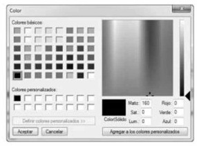
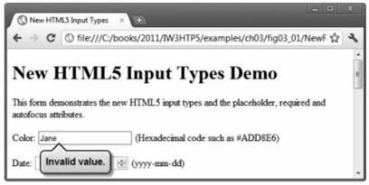

3.10 (Disposición de las páginas de nuestro Ubro en ITT MIS: agregar figuras) Modifique su solución al ejercicio 3.9
para agregar los gráficos de b sección como figuras. Las imágenes se proporcionan en la carpera textoEImagenesEjercicio con los ejemplos de este capítulo.
3.2.1 input tipo color
Introducción:
El input color (figura 3.1, lincas 20 y 21) permite al usuario introducir un color. Al momento de escribir
este libro, algunos navegadores despliegan el tipo ínput color como un campo de texto en donde el usuario
puede introducir un código hexadecimal o el nombre de un color. Hay dos navegadores, Chrome y Opera, que
muestran un selector de color similar al cuadro de diálogo de colores de Microsoft Windows, que se muestra en
la figura 3.2. En el futuro, cuando haga clic en un elemento input color, es muy probable que el resto de los
navegadores muestren un selector de color también.

Figura 3.2| Un dialogo para seleccionar colores.
El atributo autofocus
El atributo autofocus (figura 3.1, línea 20) (un atributo opcional que puede usarse sólo en un elemento
input en un formulario) otorga de manera automática el enfoque al elemento input, lo que permite al usuario
empezar a escribir en ese elemento de inmediato. La figura 3.3 muestra el uso del elemento autofocus en el
elemento color (el primer elem ento input en nuestro formulario), como se despliega en Opera. No necesita
incluir autofocus en sus formularios.
Figura 3.3| Autofocus en el elementoinput color cuando se usa el navegador.
Validación
Tradicionalmente ha sido difícil validar la entrada del usuario, como asegurar que se introduzca una dirección
de correo electrónico, URL, fecha u hora en el formato adecuado. Los nuevos tipos input de HTML5 cuentan
con validación automática del lado del cliente, con lo que se elimina la necesidad de agregar código complicado
de JavaScript a nuestras páginas Web para validar la entrada del usuario; así se reduce la cantidad de datos inválidos
que se envían y, en consecuencia, disminuye el tráfico de Internet entre el servidor y el cliente que se usa
para corregir las entradas inválidas. De todas formas el servidor debe validar toda la entrada del usuario.
Cuando un usuario introduce datos en un formulario y luego lo envía (en este ejemplo, al hacer clic en el
botón Enviar), el navegador verifica de inmediato los elementos de validación automática para asegurar que
los datos sean correctos. Por ejemplo, si un usuario introduce un valor de color hexadecimal incorrecto al usar
un navegador que despliegue los elementos color como un campo de texto (por ejemplo. Internet Explorer),
aparecerá una anotación para señalar ese elemento e indicar que se introdujo un valor incorrecto (figura 3.4).
La figura 3.5 lista cada uno de los nuevos tipos Input de HTML5 y muestra ejemplos de los formatos correctos
requeridos para que cada tipo de datos sea válido.

Figura 3.4| Validación de un elemento input color. (Actualmente ya no existe esta funcionalidad en Chrome).